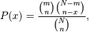
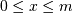
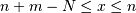

numpy.random.RandomState.hypergeometric¶
- RandomState.hypergeometric(ngood, nbad, nsample, size=None)¶
Draw samples from a Hypergeometric distribution.
Samples are drawn from a Hypergeometric distribution with specified parameters, ngood (ways to make a good selection), nbad (ways to make a bad selection), and nsample = number of items sampled, which is less than or equal to the sum ngood + nbad.
Parameters : ngood : int or array_like
Number of ways to make a good selection. Must be nonnegative.
nbad : int or array_like
Number of ways to make a bad selection. Must be nonnegative.
nsample : int or array_like
Number of items sampled. Must be at least 1 and at most ngood + nbad.
size : int or tuple of int
Output shape. If the given shape is, e.g., (m, n, k), then m * n * k samples are drawn.
Returns : samples : ndarray or scalar
The values are all integers in [0, n].
See also
- scipy.stats.distributions.hypergeom
- probability density function, distribution or cumulative density function, etc.
Notes
The probability density for the Hypergeometric distribution is

where  and 
for P(x) the probability of x successes, n = ngood, m = nbad, and N = number of samples.
Consider an urn with black and white marbles in it, ngood of them black and nbad are white. If you draw nsample balls without replacement, then the Hypergeometric distribution describes the distribution of black balls in the drawn sample.
Note that this distribution is very similar to the Binomial distribution, except that in this case, samples are drawn without replacement, whereas in the Binomial case samples are drawn with replacement (or the sample space is infinite). As the sample space becomes large, this distribution approaches the Binomial.
References
[R137] Lentner, Marvin, “Elementary Applied Statistics”, Bogden and Quigley, 1972. [R138] Weisstein, Eric W. “Hypergeometric Distribution.” From MathWorld–A Wolfram Web Resource. http://mathworld.wolfram.com/HypergeometricDistribution.html [R139] Wikipedia, “Hypergeometric-distribution”, http://en.wikipedia.org/wiki/Hypergeometric-distribution Examples
Draw samples from the distribution:
>>> ngood, nbad, nsamp = 100, 2, 10 # number of good, number of bad, and number of samples >>> s = np.random.hypergeometric(ngood, nbad, nsamp, 1000) >>> hist(s) # note that it is very unlikely to grab both bad items
Suppose you have an urn with 15 white and 15 black marbles. If you pull 15 marbles at random, how likely is it that 12 or more of them are one color?
>>> s = np.random.hypergeometric(15, 15, 15, 100000) >>> sum(s>=12)/100000. + sum(s<=3)/100000. # answer = 0.003 ... pretty unlikely!